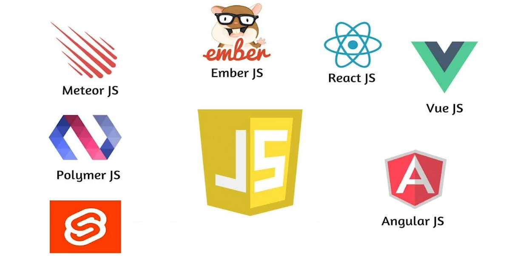

¿Qué son los Frameworks?
Un framework es un marco de trabajo que ofrece una estructura base para elaborar un proyecto con objetivos específicos, una plantilla que sirve como punto de partida para la organización y desarrollo de software.
Utilizar frameworks puede simplificar una tarea, de ahí que se trate de una de las herramientas habituales que manejan los Digital Workers.
Generalmente, los frameworks son usados por programadores porque permiten acelerar el trabajo y favorecer que este sea colaborativo, reducir errores y obtener un resultado de más calidad.
Estas estructuras no son solo cosa del departamento IT, en el mundo online hay frameworks para prácticamente todo.
Y es que, hoy en día, la automatización es la clave para conseguir que cualquier proceso de trabajo sea rápido y eficaz sin perder calidad.

¿Por qué se necesitan?
- Para evitar los posibles errores de programación
- Para mejorar el tiempo de producción de diferentes proyectos
- Para reducir el esfuerzo de los usuarios que los usan
- Para favorecer el trabajo colaborativo
- Todo esto sin perder calidad